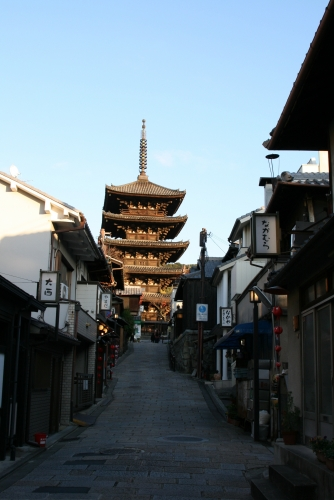
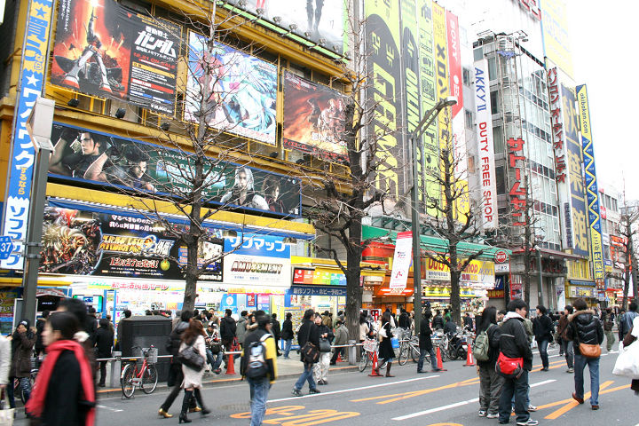

Pre-Post Conference Tours
Pre Conference Tours
2 hours guided walking tour in Hakata
A walking tour with an English map is a great idea to get to know the charms of the town before participating the conference. This is because Hakata is the area full of new and old charms having many shrines and temples maintained the traditional culture. There are a few paid walking tours with an English guide here. We pick up one of them below:

- Itinerary
Start from Tourist Information center in Hakata station
- 10:00 Hakata station
- 10:25 Jyotenji Temple
- 10:55 Shofukuji Temple
- 11:25 Kushida Shrine
- 11:50 Kawabata shopping avenue
- 12:00 Hakata Traditional Craft Center
Detail- Date
- Check the schedule here
- Fee
- 1,000 yen/person
- Application
- (1) Your name, (2) E-mail address, (3) Requested date, (4) The number of participants, (5) Hotel where you are staying by phone or e-mail at SOZOX Travel Design or here by the day before.
- Comment
- This trip will be a unique experience for you. Hakata is one of the oldest cities in Japan and today is known nationwide as the home of Zen, Japanese tea, Udon and Soba noodles, etc. You can not only visit temples but see the lives of ordinary people on the tour. Professional English guide will join us！
- Contact
- SOZOX Travel Design (http://japankyushu.com)
2-3 hours walking by yourself in Hakata

Of course, you can walk around major sightseeing spots in Fukuoka by yourself. The following course includes popular tourist spots in Fukuoka taking 2-3 hours by walk. You can find other tours at the Fukuoka/Hakata Tourist Information Site.
The initial step for this short trip is picking up a copy of "Now Map" at the informations counters inside major stations like Hakata, Tenjin, shops and over 100 hotels. “Now Map” is a free detailed and colorful map of the city is Fukuoka City’s official tourist map this year.
{kind=link}
- Sumiyoshi Shrine (10 min. from Hakata Station)
- This relaxing shrine nestled in the woods is within a ten minute walking distance of Hakata Station. It is the first one among many other Sumiyoshi Shrines in Japan. The shrine is believed to bring good luck and safe voyage, and drive away bad luck. The shrine god is also worshipped as a god of sumo wrestling. There is also a Japan’s top class Noh theatre on the shrine premises.
- Rakusuien Garden (1 min.)
- This is a Japanese garden located on the north side of Sumiyoshi shrine. You can enjoy Maccha green tea prepared in an authentic manner with seasonal Japanese confection while viewing the seasonal flowers, waterfall and pond in the garden (one tea break: 300 yen).
- Canal City Hakata (5 min.)
- Canal City resides in the middle between Tenjin area, the largest commercial district in Kyushu, and a business area around JR Hakata Station. It adjoins the Nakasu area, which is well-known as an entertainment district. It is a commercial complex consisting of a hotel, a theatre, a movie theater, shops, restaurants and a showroom that are all housed in one building around the canal. Especially worth checking out among them is the Ramen Stadium gathering popular ramen noodle shops from all over Japan and the 1st basement floor of Canal City OPA, where popular character goods are available.
- Kushida Shrine (5 min.)
- You can see a decorated float of Hakata Gion Yamakasa Festival exhibited on the shrine premises throughout the year. Sacred water springing near the main hall is said to have an effect in preserving youth. Its amazing taste is surely worth trying!
- Hakata Machiya Folk Museum (1 min.)
- Located within walking distance of Kushida Shrine, this facility introduces the life and culture of Hakata in good old days. Here you can visit Hakata’s traditional craft workshops such as Hakata dolls and Hakata Goma (tops) and try your hand at weaving Hakata-ori textiles for free. You can also purchase traditional handicrafts and Japanese confection that make perfect souvenirs.
- Tochoji Temple (5 min.)
- This was the first temple which Kukai (Kobo-Daishi), a Japanese monk, founded in 806. Japan’s largest wooden Buddhist statue named Fukuoka Daibutsu is sitting in the main hall. Beside the statue is an entrance to the tour of “hell and heaven.” After looking at the chilling images of the hell, you walk through a passage way in sheer darkness and come across the image of heaven. Admission free.
4.5 hours guided bus tour in Hakata
{kind=link}
- Itinerary
- Start from Platform 11, 1F Hakata-eki Kotsu Center
- 9:00-9:15 Reception at the platform no.11
- 9:30 Depart by Green Bus
- 10:41 Depart from Kushida Jinja. Get off at Fukuokashi Hakubutsukan. Free time until the next departure (You can stroll around Fukuoka City Museum, Fukuoka Tower, Marizon, Momochi Seaside Park, TNC TV Bldg. and have a lunch in the area)
- 12:55 Depart from Fukuoka Tower
- 13:14 Get off at Fukuoka Joshi. Guide tour around Fukuoka Castle Ruins (Tamon Yagura turret, Honmaru ruin and other ruins)
- Date
- Every Saturday and Sunday
- Fee
- 2,800 yen/person
- Application
- (1) Your name, (2) E-mail address, (3) Requested date, (4) The number of participants, (5) Hotel where you are staying by phone or e-mail here
- Comment
- We guide you around the Fukuoka and Hakata areas along the Fukuoka City Loop Bus GREEN route. An English speaking tour guide provides hidden information about tourist attractions while you are traveling by the GREEN BUS and gives you the brief walking tours at the fascinating tourist spots. The places to wander about accompanied by a guide are; the shrine and temple areas in Hakata, the Momochi area, and Fukuoka Castle Ruins.
- Contact
- Japan KYUSHU Tourist (http://www.japan-kyushu-tourist.com/)
Post Conference Tours
Plan A: Flight to home
From Hakata Airport:
- Tokyo Narita (1h 50min)
- 7:10, 7:55, 12:10, 13:25, 14:10,18:05
- Korea Seoul (1h 15min)
- 10:30, 11:50, 12:25, 16:20, 16:45, 17:00, 19:20, 21:00
Plan B: Hakata 3-4 hours trip
This plan is for you to get to know about the history and culture of Japan in deep. It includes Dazaifu Tenmangu Shrine dedicated to Sugawara Michizane, the god of learning by train. You can add other places in the pre conference tours mentioned above.
{kind=link}
- Dazaifu Tenmangu Shrine (20 min. from the Nishitetsu Fukuoka station by train)
- Walk towards Tenjin, and then take the Limited Express and a local train on the Nishitetsu line from Nishitetsu Fukuoka Station to get to Nishitetsu Dazaifu Station. “Dazaifu Sansaku Kippu” (1,000 yen for one adult) is recommended for this course. The ticket includes the round trip fare between Nishitetsu Fukuoka (Tenjin) and Dazaifu Station, and Maccha Green Tea and Umegaemochi (rice cake) set at Kasanoie (cafe) in Dazaifu. This shrine is famous nationwide for being dedicated to the god of study. There is a variety of let good fortune items available on the shrine premises. Especially popular is plum liquor made with the plums of the plum trees on the premises.
- Kyushu National Museum (3 min. by walk)
- This is the fourth national museum in Japan, introducing the history and culture of Japan in great detail. Special exhibitions are held in each season. Inside the museum is also a restaurant and a museum shop with a lot of items suitable for souvenirs.
- Komyozen-ji Temple (5 min. by walk)
- Walk another 5 minutes from the museum to get to the 'Komyozen-ji Temple' built in 1273 by a monk related to the Sugawaras enshrined in the Dazaifu Tenmangu Shrine. The stones, moss and white sand of the gardens are arranged to form a beautiful image well worth a visit.
- Ohori Park (20 min. from the Dazaifu station by train, 5 min. from Nishitetsu Fukuoka station by subway
- Return to Nishitetsu Fukuoka Station. Change to the subway at Nishitetsu Fukuoka Station and go to Ohori Park. This park opened in 1929 on the site of Fukuoka Castle. It is modeled after Lake Xi Hu (West Lake) in China and has a Japanese garden, Noh theater and art museum.
- Fukuoka Tower (3 min. from Ohori park by subway
- Travel to Nishijin Station by subway and then take a bus to 'Fukuoka Tower'. Rising to 235 meters, this is the tallest tower standing on a sea front in Japan. A grand panoramic view is commanded from the observation room (123 meters high) on the top floor. You can, of course, also enjoy the night view with its beautiful lights.
Plan C: Kyoto 1day trip
Those who wants to stop over Kyoto typically book one night stay around Kyoto or Osaka, and a return air ticket from Kansai Airport or Itami airport.
- Transport to Kyoto
- By Air (75 min.)
- JAL, ANA and Peach operate numerous flights per day between Osaka near Kyoto (Kansai Airport and Itami Airport) and Fukuoka. Flight time is about 75 minutes. The regular one way fare by JAL and ANA is around 20,000 yen, however, discount tickets and fares by Peach are typically available for around 4,000 to 13,000 yen.
- By Shinkansen (3 hours.)
- Kyoto and Fukuoka (Hakata Station) are connected with each other by the JR Tokaido/Sanyo Shinkansen. By direct Nozomi trains, the one way journey takes about three hours. The regular one way fare from Kyoto to Fukuoka is 14,700 yen by non-reserved seat on any train and around 15,600 yen by reserved seat on a Nozomi train.
- Stay around Kyoto Look at hotel lists in official sightseeing web site by Kyoto prefecture here.
- Enjoy Kyoto
Many recommended walking tours for tourists are introduced here. We pick up a popular course covering the national museum and major temples below:
(Provided by KYOTOdesign)
- A short walk from the ultramodern Kyoto Station, you come across Higashi (East) Hongwanji Temple and Nishi (West) Hongwanji Temple, and a little further, the beautiful gardens of Shosei-en Garden. All are free to enter and make for an enjoyable half-day stroll.
- If you're feeling energetic, continue to the Umekoji Steam Locomotive Preservation Hall where you can take a bumpy ride on one of the locomotives, or just stroll around Umekoji (Plum Blossom Alley) Park.
- From here head to To-ji Temple, its five-story pagoda-the tallest in Japan- stands tall among the concrete of southern Kyoto. This temple is a landmark associated with the bustling flea markets held in the grounds on the I st Sunday of each month and the 21st of each month. Here, you hunt through the many stalls offering antiques, ceramics, plants, food and more for that perfect souvenir to take home, which reminds you of your time in the Old Capital.
- Not far from the station is the huge Sanjusangen-do Temple. Its long wooden halls house 1,001 statues of Kannon, the Goddess of Mercy You have an eerie feeling you are being watched as you follow the route through the smoky, incense-filled halls. Across the road is the Kyoto National Museum filled with beautiful artworks and many important cultural properties and National Treasures.
- Back to Kansai Airport
- By Train (73 min.)
- JR Haruka Limited Express connects to Kyoto. Reserved and non reserved seats are available for about 3,000 yen.
- By Bus (95-135 min.)
- Airport limousine buses connect Kansai Airport with various places and hotels in Osaka, Kyoto, Kobe and other destinations in the Kansai region. It costs about 2,500 yen from Kyoto.
- By Taxi (120 min.)
- A taxi ride into the city center of Kyoto is very expensive and not recommended to common travelers. It must be over 30,000 yen.
{kind=link}
Plan D: Tokyo 1day trip
You can also extend your visit over Tokyo if you buy an return air ticket from Narita or Haneda airport.
- Transport to Tokyo
- By Air (120 min.)
- Tokyo-Fukuoka is one of the world's busiest air routes with dozens of departures per day, operated by JAL, ANA, Starflyer, Skymark and Jetstar Japan. Flight duration is about 110 minutes. Most flights between Tokyo and Fukuoka use Tokyo's Haneda Airport, and only a few flights use Narita Airport. The regular one way fare by JAL and ANA is around 37,000 yen, but discount fares are typically available for 12,000 to 28,000 yen. The cheapest options are Skymark and Jetstar Japan with one way fares of around 5,000 to 17,000 yen.
- By Shinkansen (5 hours.)
- Tokyo and Fukuoka (Hakata Station) are connected with each other by the Tokaido/Sanyo Shinkansen. The one way trip by direct Nozomi trains takes five hours and costs around 22,000 yen.
- Stay around Tokyo
You can easily find your favorite type of room at the official Tokyo travel guide here.
- Enjoy Tokyo
Recommended courses served at the official Tokyo travel guide are designed to help you cover unfamiliar areas of Tokyo thoroughly and efficiently. You can search by area, purpose, and the duration of stay. This includes a short trip by walk around Haneda airport so that tourists who don't have enough time to visit the center of Tokyo can enjoy during their transit time. "OTAKU" tour introduced below is picked up from them. You can discover the exciting Japanese pop culture of anime, games, and all sorts of J-pop using the JR Yamanote Line!
(Provided by http://www.tokyo-date.net/)
- Go to Akihabara, the famous mecca for otaku
There's no place like Akihabara! After checking out the overwhelming number of electric products at Yodobashi Camera, go to the Tokyo Anime Center in the UDX building just in front of Akihabara Station. The shop is filled with information and goods to please all types of anime freaks. You will find all your favorites from the well-known works to the latest works.
- Visit the "Eccentric" Cafes!
"Welcome back, Honey!" The waitresses in French maid outfits welcome you with a bright and alluring smile at a "maid cafe," a unique place to have lunch. After lunch, relax at the " Gandam Cafe" and partake of one of their extremely original menu items or at one of the manga cafes and read manga as long as you like.
- Check Anime Goods and Costumes!
If you want to pick up a few anime souvenirs, try the Gee! Store Akiba for T-shirts and a wide variety of goods with anime characters. Naruto and Evangelion are popular even among adults. They also have costumes for cosplay.
- Tokyo Character Street (3 min. from Akihabara to Tokyo by JR Yamanote Line)
Soon after stepping through the underground exit gates on the Yaesu side of Tokyo Station, you will see Tokyo Character Street. There is a street full of shops selling popular character goods of Studio Ghibli's movies, Ultraman, Snoopy, and Hello Kitty as well as ¥"JUMP SHOP¥" where One Piece goods are sold. It's difficult to make a choice. Which characters do you like best?
- Let's find your favorite J-pop (20 min. from Tokyo to Shibuya by JR Yamanote Line)
Next, let's check out Tower Records, the huge music store. They have a huge selection of CDs of J-pop, enka (Japanese ballads) and overseas artists. There are many listening corners and the clerks are quite knowledgeable. They are very good at helping you find what you're looking for.
- Takeshita Street (3 min. from Shibuya to Harajuku by JR Yamanote Line)
Takeshita Street is alive with many young people shopping for the latest trends and you can see many photos of teen pop stars. If you are a Johnny fan, don't miss " Johnny's Shop". Another unforgettable experience is shopping at " Kiddy Land," the internationally known Japanese toy store chain that sells many only-in-Japan items. (Now, Kiddy Land is currently under reconstruction but the temporary store is open in Ura-Harajuku area.)
- Go to Akihabara, the famous mecca for otaku
- Back to Haneda/Narita Airport
To Narita:
- By Train (60 min.)
- The fastest way of travel between Narita Airport and Tokyo Station is the JR Narita Express (NEX). The one way journey takes roughly one hour, costs around 3000 yen and is fully covered by the Japan Rail Pass and JR East Pass. There are departures every 30 to 60 minutes.
- By Bus (80-100 min.)
- Limousine buses to Tokyo Station depart Narita Airport every 15 to 20 minutes. The one way journey takes about 80 to 100 minutes and costs 3000 yen.
- By Taxi (60-90 min.)
- Because Narita Airport is located about 60 km outside of Tokyo, a taxi ride into central Tokyo is very expensive and not recommended to common travelers.
To Haneda:
- By Train (30 min.)
- Take the JR Yamanote or JR Keihin-Tohoku Line from Tokyo Station to Hamamatsucho Station (5 minutes, 150 yen) and transfer to the Tokyo Monorail to Haneda Airport (20 minutes, 470 yen). Otherwise, take the same JR Line to Shinagawa and transfer to the Keikyu Airport Line to Haneda Airport (20 minutes, 400 yen).
- By Bus (30-60 min.)
- Limousine buses to Haneda Airport depart Tokyo Station every 30 to 60 minutes. Depending on the traffic situation, the one way journey usually takes between 25 and 45 minutes and costs 900 yen.
- By Taxi (30 min.)
- A taxi ride into central Tokyo typically costs between 4,000 and 10,000 yen depending on the destination and time of the day
{kind=link}